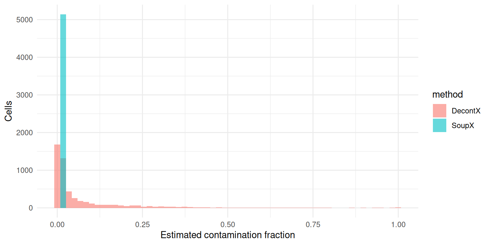
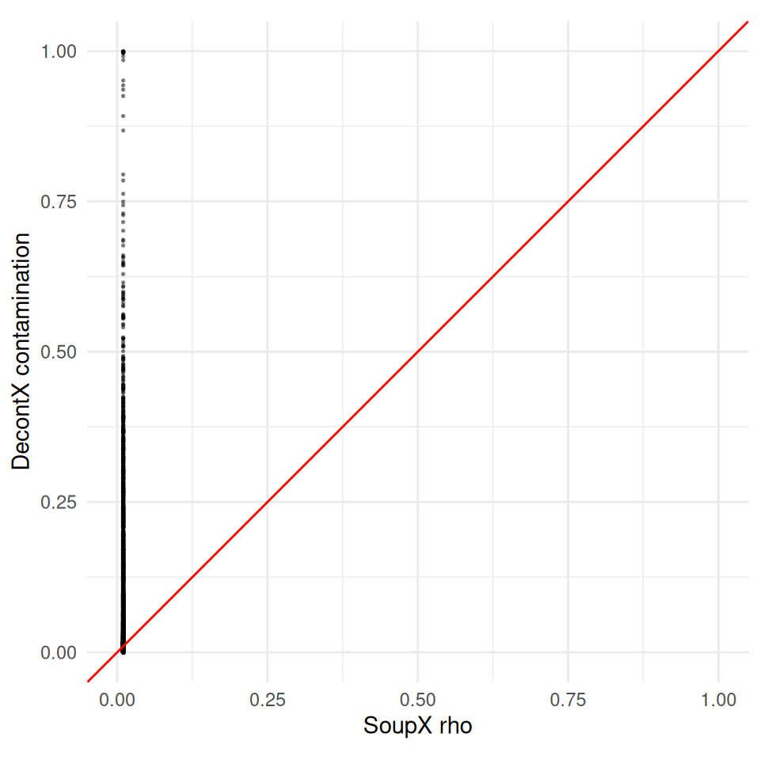
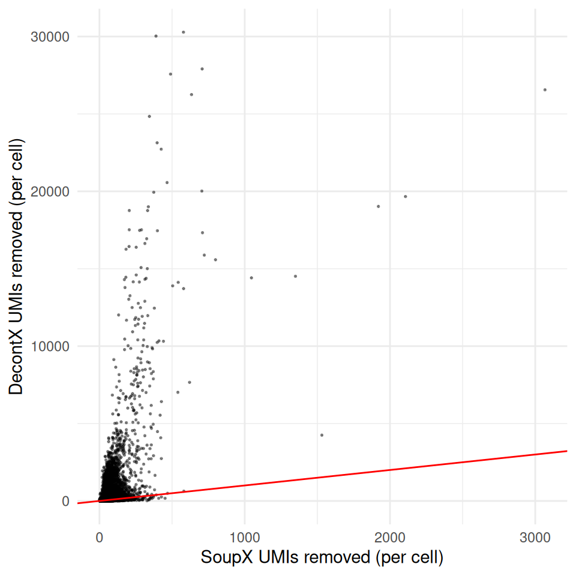
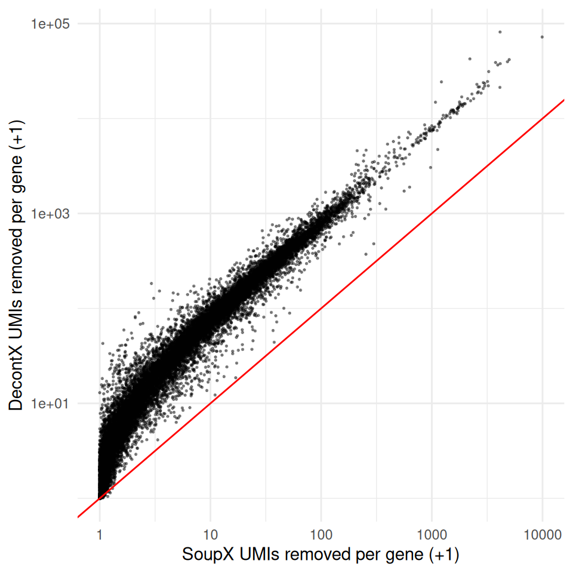
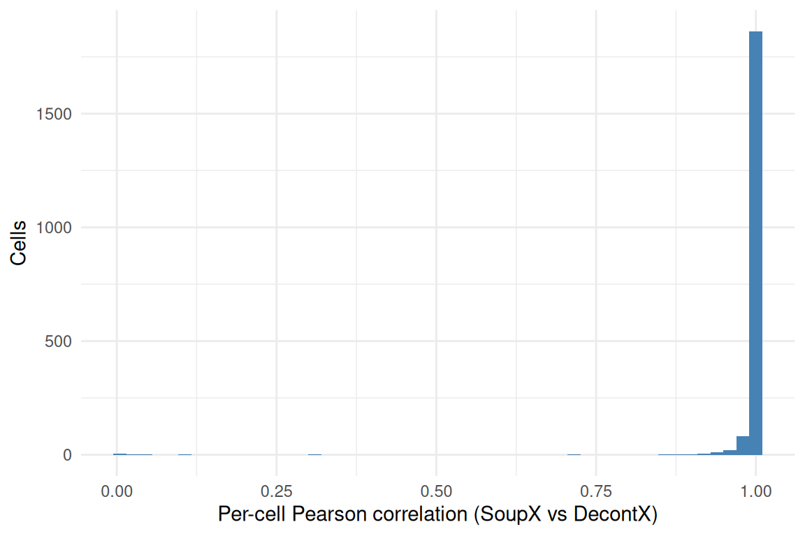

Last updated: 2026-04-27
Checks: 7 0
Knit directory: muse/
This reproducible R Markdown analysis was created with workflowr (version 1.7.2). The Checks tab describes the reproducibility checks that were applied when the results were created. The Past versions tab lists the development history.
Great! Since the R Markdown file has been committed to the Git repository, you know the exact version of the code that produced these results.
Great job! The global environment was empty. Objects defined in the global environment can affect the analysis in your R Markdown file in unknown ways. For reproduciblity it’s best to always run the code in an empty environment.
The command set.seed(20200712) was run prior to running
the code in the R Markdown file. Setting a seed ensures that any results
that rely on randomness, e.g. subsampling or permutations, are
reproducible.
Great job! Recording the operating system, R version, and package versions is critical for reproducibility.
Nice! There were no cached chunks for this analysis, so you can be confident that you successfully produced the results during this run.
Great job! Using relative paths to the files within your workflowr project makes it easier to run your code on other machines.
Great! You are using Git for version control. Tracking code development and connecting the code version to the results is critical for reproducibility.
The results in this page were generated with repository version 2817957. See the Past versions tab to see a history of the changes made to the R Markdown and HTML files.
Note that you need to be careful to ensure that all relevant files for
the analysis have been committed to Git prior to generating the results
(you can use wflow_publish or
wflow_git_commit). workflowr only checks the R Markdown
file, but you know if there are other scripts or data files that it
depends on. Below is the status of the Git repository when the results
were generated:
Ignored files:
Ignored: .Rproj.user/
Ignored: data/1M_neurons_filtered_gene_bc_matrices_h5.h5
Ignored: data/293t/
Ignored: data/293t_3t3_filtered_gene_bc_matrices.tar.gz
Ignored: data/293t_filtered_gene_bc_matrices.tar.gz
Ignored: data/5k_Human_Donor1_PBMC_3p_gem-x_5k_Human_Donor1_PBMC_3p_gem-x_count_sample_filtered_feature_bc_matrix.h5
Ignored: data/5k_Human_Donor2_PBMC_3p_gem-x_5k_Human_Donor2_PBMC_3p_gem-x_count_sample_filtered_feature_bc_matrix.h5
Ignored: data/5k_Human_Donor3_PBMC_3p_gem-x_5k_Human_Donor3_PBMC_3p_gem-x_count_sample_filtered_feature_bc_matrix.h5
Ignored: data/5k_Human_Donor4_PBMC_3p_gem-x_5k_Human_Donor4_PBMC_3p_gem-x_count_sample_filtered_feature_bc_matrix.h5
Ignored: data/97516b79-8d08-46a6-b329-5d0a25b0be98.h5ad
Ignored: data/Parent_SC3v3_Human_Glioblastoma_filtered_feature_bc_matrix.tar.gz
Ignored: data/brain_counts/
Ignored: data/cl.obo
Ignored: data/cl.owl
Ignored: data/jurkat/
Ignored: data/jurkat:293t_50:50_filtered_gene_bc_matrices.tar.gz
Ignored: data/jurkat_293t/
Ignored: data/jurkat_filtered_gene_bc_matrices.tar.gz
Ignored: data/pbmc20k/
Ignored: data/pbmc20k_seurat/
Ignored: data/pbmc3k.csv
Ignored: data/pbmc3k.csv.gz
Ignored: data/pbmc3k.h5ad
Ignored: data/pbmc3k/
Ignored: data/pbmc3k_bpcells_mat/
Ignored: data/pbmc3k_export.mtx
Ignored: data/pbmc3k_matrix.mtx
Ignored: data/pbmc3k_seurat.rds
Ignored: data/pbmc4k_filtered_gene_bc_matrices.tar.gz
Ignored: data/pbmc_1k_v3_filtered_feature_bc_matrix.h5
Ignored: data/pbmc_1k_v3_raw_feature_bc_matrix.h5
Ignored: data/refdata-gex-GRCh38-2020-A.tar.gz
Ignored: data/seurat_1m_neuron.rds
Ignored: data/t_3k_filtered_gene_bc_matrices.tar.gz
Ignored: r_packages_4.5.2/
Untracked files:
Untracked: .claude/
Untracked: CLAUDE.md
Untracked: analysis/.claude/
Untracked: analysis/aucc.Rmd
Untracked: analysis/bimodal.Rmd
Untracked: analysis/bioc.Rmd
Untracked: analysis/bioc_scrnaseq.Rmd
Untracked: analysis/chick_weight.Rmd
Untracked: analysis/likelihood.Rmd
Untracked: analysis/modelling.Rmd
Untracked: analysis/sampleqc.Rmd
Untracked: analysis/wordpress_readability.Rmd
Untracked: bpcells_matrix/
Untracked: data/Caenorhabditis_elegans.WBcel235.113.gtf.gz
Untracked: data/GCF_043380555.1-RS_2024_12_gene_ontology.gaf.gz
Untracked: data/SC3pv3_GEX_Human_PBMC_filtered_feature_bc_matrix.h5
Untracked: data/SC3pv3_GEX_Human_PBMC_raw_feature_bc_matrix.h5
Untracked: data/SeuratObj.rds
Untracked: data/arab.rds
Untracked: data/astronomicalunit.csv
Untracked: data/davetang039sblog.WordPress.2026-02-12.xml
Untracked: data/femaleMiceWeights.csv
Untracked: data/lung_bcell.rds
Untracked: m3/
Untracked: output/decontx_corrected.rds
Untracked: output/soupx_corrected.rds
Untracked: women.json
Unstaged changes:
Modified: analysis/isoform_switch_analyzer.Rmd
Note that any generated files, e.g. HTML, png, CSS, etc., are not included in this status report because it is ok for generated content to have uncommitted changes.
These are the previous versions of the repository in which changes were
made to the R Markdown (analysis/ambient.Rmd) and HTML
(docs/ambient.html) files. If you’ve configured a remote
Git repository (see ?wflow_git_remote), click on the
hyperlinks in the table below to view the files as they were in that
past version.
| File | Version | Author | Date | Message |
|---|---|---|---|---|
| Rmd | 2817957 | Dave Tang | 2026-04-27 | Comparing SoupX and DecontX |
This notebook compares the ambient-RNA corrections produced by SoupX and DecontX on
the same SC3pv3_GEX_Human_PBMC dataset. Both source
notebooks save their corrected count matrix and per-cell contamination
estimate to output/; we load both here and compare them at
the per-cell, per-gene, and per-(cell × gene) level.
To recap the two methods briefly:
rho by looking for genes that should
be soup-only in particular clusters.Both methods produce a corrected count matrix of the same shape as
the input filtered matrix, plus a per-cell contamination fraction in
[0, 1]. We can therefore line up the two outputs
cell-by-cell and gene-by-gene to see where they agree and where they
diverge.
suppressPackageStartupMessages({
library(Matrix)
library(Seurat)
library(ggplot2)
})We need three things: the original filtered count matrix (so we can compute the per-gene and per-cell totals removed by each method), the SoupX corrected matrix, and the DecontX corrected matrix.
original <- Seurat::Read10X_h5("data/SC3pv3_GEX_Human_PBMC_filtered_feature_bc_matrix.h5")
soupx <- readRDS("output/soupx_corrected.rds")
decontx <- readRDS("output/decontx_corrected.rds")The two corrected matrices should cover the same set of cells, since both notebooks start from the same Cell Ranger filtered output:
dim(original)[1] 36601 5140dim(soupx$counts)[1] 36601 5140dim(decontx$counts)[1] 36601 5140To make per-cell comparisons we re-order both corrected matrices and their metadata to match the column order of the original filtered matrix.
common_cells <- Reduce(
intersect,
list(colnames(original), colnames(soupx$counts), colnames(decontx$counts))
)
length(common_cells)[1] 5140original <- original[, common_cells]
soupx$counts <- soupx$counts[, common_cells]
decontx$counts <- decontx$counts[, common_cells]
soupx$meta <- soupx$meta[common_cells, ]
decontx$meta <- decontx$meta[common_cells, ]The most direct comparison is the per-cell contamination fraction.
SoupX estimates this via autoEstCont() and stores it in
sc$metaData$rho; DecontX produces it as
colData(sce)$decontX_contamination. Both are bounded in
[0, 1].
summary(soupx$meta$rho) Min. 1st Qu. Median Mean 3rd Qu. Max.
0.01 0.01 0.01 0.01 0.01 0.01 summary(decontx$meta$rho) Min. 1st Qu. Median Mean 3rd Qu. Max.
2.368e-05 6.639e-03 1.614e-02 6.977e-02 7.397e-02 9.995e-01 rho_long <- rbind(
data.frame(method = "SoupX", rho = soupx$meta$rho),
data.frame(method = "DecontX", rho = decontx$meta$rho)
)
ggplot(rho_long, aes(rho, fill = method)) +
geom_histogram(bins = 60, alpha = 0.6, position = "identity") +
labs(x = "Estimated contamination fraction", y = "Cells") +
theme_minimal()
A scatter plot of the two estimates per cell shows whether the methods agree on which cells are most contaminated. A diagonal trend means they agree on the relative ranking; the absolute level often differs because the two estimators use different priors and different anchors for the ambient distribution.
ggplot(
data.frame(soupx = soupx$meta$rho, decontx = decontx$meta$rho),
aes(soupx, decontx)
) +
geom_point(size = 0.3, alpha = 0.4) +
geom_abline(slope = 1, intercept = 0, colour = "red") +
coord_equal(xlim = c(0, 1), ylim = c(0, 1)) +
labs(x = "SoupX rho", y = "DecontX contamination") +
theme_minimal()
cor(soupx$meta$rho, decontx$meta$rho, method = "spearman")Warning in cor(soupx$meta$rho, decontx$meta$rho, method = "spearman"): the
standard deviation is zero[1] NAThe estimated rho is what each model believes; the UMIs
actually subtracted from each cell are what the model produced. These
two are not exactly equal because both adjustCounts() and
decontXcounts() distribute the removed counts across genes
in a constrained way. Comparing per-cell UMIs removed is therefore a
useful complement to the rho comparison.
total_orig <- Matrix::colSums(original)
removed_soup <- total_orig - Matrix::colSums(soupx$counts)
removed_decon <- total_orig - Matrix::colSums(decontx$counts)
ggplot(
data.frame(soupx = removed_soup, decontx = removed_decon),
aes(soupx, decontx)
) +
geom_point(size = 0.3, alpha = 0.4) +
geom_abline(slope = 1, intercept = 0, colour = "red") +
labs(x = "SoupX UMIs removed (per cell)",
y = "DecontX UMIs removed (per cell)") +
theme_minimal()
Summing the corrections across cells gives a per-gene total of how many UMIs each method assigned to soup. The genes at the top of these lists are the methods’ best guesses at the most soup-contaminated genes in the dataset.
gene_totals <- data.frame(
gene = rownames(original),
before = Matrix::rowSums(original),
after_soupx = Matrix::rowSums(soupx$counts),
after_decontx = Matrix::rowSums(decontx$counts)
)
gene_totals$removed_soupx <- gene_totals$before - gene_totals$after_soupx
gene_totals$removed_decontx <- gene_totals$before - gene_totals$after_decontxThe 20 genes with the largest counts removed by each method:
head(
gene_totals[order(-gene_totals$removed_soupx),
c("gene", "before", "removed_soupx", "removed_decontx")],
20
) gene before removed_soupx removed_decontx
MALAT1 MALAT1 1306323 9919.877 72179.73
MT-CO3 MT-CO3 302203 4998.467 41737.05
MT-ATP6 MT-ATP6 254705 4817.108 39617.02
B2M B2M 299731 4145.090 37859.42
HBB HBB 1502534 4133.803 81436.61
MT-ND2 MT-ND2 82757 4119.649 21281.03
MT-CO2 MT-CO2 298067 3939.158 36664.44
TMSB4X TMSB4X 204961 3760.336 38870.04
MT-CO1 MT-CO1 245975 3262.332 31220.44
RPL13 RPL13 260804 3236.824 22101.57
RPL41 RPL41 282976 3186.877 24516.84
EEF1A1 EEF1A1 299068 3000.042 23428.86
RPLP1 RPLP1 251443 2995.902 21983.88
MT-ND3 MT-ND3 212650 2915.639 23892.01
RPS12 RPS12 262490 2913.369 20714.72
MT-ND1 MT-ND1 100787 2784.227 18511.50
RPL10 RPL10 274013 2693.948 21555.22
RPS27 RPS27 251827 2632.916 19078.30
MT-ND4 MT-ND4 157740 2621.564 21459.64
TPT1 TPT1 246761 2579.897 18594.89head(
gene_totals[order(-gene_totals$removed_decontx),
c("gene", "before", "removed_soupx", "removed_decontx")],
20
) gene before removed_soupx removed_decontx
HBB HBB 1502534 4133.803 81436.61
MALAT1 MALAT1 1306323 9919.877 72179.73
HBA2 HBA2 832936 2205.307 42411.80
MT-CO3 MT-CO3 302203 4998.467 41737.05
MT-ATP6 MT-ATP6 254705 4817.108 39617.02
TMSB4X TMSB4X 204961 3760.336 38870.04
B2M B2M 299731 4145.090 37859.42
MT-CO2 MT-CO2 298067 3939.158 36664.44
MT-CO1 MT-CO1 245975 3262.332 31220.44
RPL41 RPL41 282976 3186.877 24516.84
HBA1 HBA1 485458 1220.109 24329.84
MT-ND3 MT-ND3 212650 2915.639 23892.01
EEF1A1 EEF1A1 299068 3000.042 23428.86
MT-CYB MT-CYB 197993 2551.718 22887.58
RPL13 RPL13 260804 3236.824 22101.57
RPLP1 RPLP1 251443 2995.902 21983.88
RPL10 RPL10 274013 2693.948 21555.22
MT-ND4 MT-ND4 157740 2621.564 21459.64
MT-ND2 MT-ND2 82757 4119.649 21281.03
RPS12 RPS12 262490 2913.369 20714.72A scatter plot at the gene level — log-scaled because a handful of soup genes dominate the totals — shows whether the two methods agree on per-gene removal:
ggplot(
gene_totals,
aes(removed_soupx + 1, removed_decontx + 1)
) +
geom_point(size = 0.3, alpha = 0.4) +
geom_abline(slope = 1, intercept = 0, colour = "red") +
scale_x_log10() +
scale_y_log10() +
labs(x = "SoupX UMIs removed per gene (+1)",
y = "DecontX UMIs removed per gene (+1)") +
theme_minimal()
The classical ambient-RNA markers in PBMC preps are the haemoglobin
genes (HBB, HBA1, HBA2) —
released by lysed red blood cells — and immunoglobulin genes
(IGKC, IGLC2, IGHA1) — released
by lysed plasma cells. Both methods should remove the haemoglobin counts
almost entirely; the immunoglobulin counts should be preserved in the B
/ plasma cell cluster but removed from elsewhere.
markers <- intersect(
c("HBB", "HBA1", "HBA2", "IGKC", "IGLC2", "IGHA1"),
rownames(original)
)
data.frame(
gene = markers,
before = Matrix::rowSums(original[markers, ]),
after_soupx = round(Matrix::rowSums(soupx$counts[markers, ])),
after_decontx = round(Matrix::rowSums(decontx$counts[markers, ])),
removed_soupx = round(Matrix::rowSums(original[markers, ]) -
Matrix::rowSums(soupx$counts[markers, ])),
removed_decontx = round(Matrix::rowSums(original[markers, ]) -
Matrix::rowSums(decontx$counts[markers, ]))
) gene before after_soupx after_decontx removed_soupx removed_decontx
HBB HBB 1502534 1498400 1421097 4134 81437
HBA1 HBA1 485458 484238 461128 1220 24330
HBA2 HBA2 832936 830731 790524 2205 42412
IGKC IGKC 32306 32028 31201 278 1105
IGLC2 IGLC2 47710 47457 47339 253 371
IGHA1 IGHA1 18852 18554 18373 298 479Finally, we ask how similar the two corrected matrices are at the (cell × gene) level. For each cell we compute the Pearson correlation between the SoupX-corrected and DecontX-corrected expression vectors. A correlation close to 1 means the two methods broadly agree on which counts to remove from that cell; a correlation noticeably below 1 means they disagree on the per-cell distribution of corrections.
We sample 2000 cells to keep the computation cheap.
set.seed(1984)
sample_cells <- sample(common_cells, min(2000, length(common_cells)))
cell_cor <- vapply(sample_cells, function(b) {
cor(as.numeric(soupx$counts[, b]), as.numeric(decontx$counts[, b]))
}, numeric(1))
ggplot(data.frame(r = cell_cor), aes(r)) +
geom_histogram(bins = 50, fill = "steelblue") +
labs(x = "Per-cell Pearson correlation (SoupX vs DecontX)",
y = "Cells") +
theme_minimal()
summary(cell_cor) Min. 1st Qu. Median Mean 3rd Qu. Max.
0.005074 0.999209 0.999972 0.992423 0.999993 1.000000 sessionInfo()R version 4.5.2 (2025-10-31)
Platform: x86_64-pc-linux-gnu
Running under: Ubuntu 24.04.4 LTS
Matrix products: default
BLAS: /usr/lib/x86_64-linux-gnu/openblas-pthread/libblas.so.3
LAPACK: /usr/lib/x86_64-linux-gnu/openblas-pthread/libopenblasp-r0.3.26.so; LAPACK version 3.12.0
locale:
[1] LC_CTYPE=en_US.UTF-8 LC_NUMERIC=C
[3] LC_TIME=en_US.UTF-8 LC_COLLATE=en_US.UTF-8
[5] LC_MONETARY=en_US.UTF-8 LC_MESSAGES=en_US.UTF-8
[7] LC_PAPER=en_US.UTF-8 LC_NAME=C
[9] LC_ADDRESS=C LC_TELEPHONE=C
[11] LC_MEASUREMENT=en_US.UTF-8 LC_IDENTIFICATION=C
time zone: Etc/UTC
tzcode source: system (glibc)
attached base packages:
[1] stats graphics grDevices utils datasets methods base
other attached packages:
[1] ggplot2_4.0.3 Seurat_5.5.0 SeuratObject_5.4.0 sp_2.2-1
[5] Matrix_1.7-4 workflowr_1.7.2
loaded via a namespace (and not attached):
[1] RColorBrewer_1.1-3 rstudioapi_0.18.0 jsonlite_2.0.0
[4] magrittr_2.0.5 spatstat.utils_3.2-2 farver_2.1.2
[7] rmarkdown_2.31 fs_2.1.0 vctrs_0.7.3
[10] ROCR_1.0-12 spatstat.explore_3.8-0 htmltools_0.5.9
[13] sass_0.4.10 sctransform_0.4.3 parallelly_1.47.0
[16] KernSmooth_2.23-26 bslib_0.10.0 htmlwidgets_1.6.4
[19] ica_1.0-3 plyr_1.8.9 plotly_4.12.0
[22] zoo_1.8-15 cachem_1.1.0 whisker_0.4.1
[25] igraph_2.3.0 mime_0.13 lifecycle_1.0.5
[28] pkgconfig_2.0.3 R6_2.6.1 fastmap_1.2.0
[31] fitdistrplus_1.2-6 future_1.70.0 shiny_1.13.0
[34] digest_0.6.39 patchwork_1.3.2 ps_1.9.3
[37] rprojroot_2.1.1 tensor_1.5.1 RSpectra_0.16-2
[40] irlba_2.3.7 labeling_0.4.3 progressr_0.19.0
[43] spatstat.sparse_3.1-0 httr_1.4.8 polyclip_1.10-7
[46] abind_1.4-8 compiler_4.5.2 bit64_4.8.0
[49] withr_3.0.2 S7_0.2.2 fastDummies_1.7.6
[52] MASS_7.3-65 tools_4.5.2 lmtest_0.9-40
[55] otel_0.2.0 httpuv_1.6.17 future.apply_1.20.2
[58] goftest_1.2-3 glue_1.8.1 callr_3.7.6
[61] nlme_3.1-168 promises_1.5.0 grid_4.5.2
[64] Rtsne_0.17 getPass_0.2-4 cluster_2.1.8.1
[67] reshape2_1.4.5 generics_0.1.4 hdf5r_1.3.12
[70] gtable_0.3.6 spatstat.data_3.1-9 tidyr_1.3.2
[73] data.table_1.18.2.1 spatstat.geom_3.7-3 RcppAnnoy_0.0.23
[76] ggrepel_0.9.8 RANN_2.6.2 pillar_1.11.1
[79] stringr_1.6.0 spam_2.11-3 RcppHNSW_0.6.0
[82] later_1.4.8 splines_4.5.2 dplyr_1.2.1
[85] lattice_0.22-7 survival_3.8-3 bit_4.6.0
[88] deldir_2.0-4 tidyselect_1.2.1 miniUI_0.1.2
[91] pbapply_1.7-4 knitr_1.51 git2r_0.36.2
[94] gridExtra_2.3 scattermore_1.2 xfun_0.57
[97] matrixStats_1.5.0 stringi_1.8.7 lazyeval_0.2.3
[100] yaml_2.3.12 evaluate_1.0.5 codetools_0.2-20
[103] tibble_3.3.1 cli_3.6.6 uwot_0.2.4
[106] xtable_1.8-8 reticulate_1.46.0 processx_3.9.0
[109] jquerylib_0.1.4 Rcpp_1.1.1-1.1 globals_0.19.1
[112] spatstat.random_3.4-5 png_0.1-9 spatstat.univar_3.1-7
[115] parallel_4.5.2 dotCall64_1.2 listenv_0.10.1
[118] viridisLite_0.4.3 scales_1.4.0 ggridges_0.5.7
[121] purrr_1.2.2 rlang_1.2.0 cowplot_1.2.0
sessionInfo()R version 4.5.2 (2025-10-31)
Platform: x86_64-pc-linux-gnu
Running under: Ubuntu 24.04.4 LTS
Matrix products: default
BLAS: /usr/lib/x86_64-linux-gnu/openblas-pthread/libblas.so.3
LAPACK: /usr/lib/x86_64-linux-gnu/openblas-pthread/libopenblasp-r0.3.26.so; LAPACK version 3.12.0
locale:
[1] LC_CTYPE=en_US.UTF-8 LC_NUMERIC=C
[3] LC_TIME=en_US.UTF-8 LC_COLLATE=en_US.UTF-8
[5] LC_MONETARY=en_US.UTF-8 LC_MESSAGES=en_US.UTF-8
[7] LC_PAPER=en_US.UTF-8 LC_NAME=C
[9] LC_ADDRESS=C LC_TELEPHONE=C
[11] LC_MEASUREMENT=en_US.UTF-8 LC_IDENTIFICATION=C
time zone: Etc/UTC
tzcode source: system (glibc)
attached base packages:
[1] stats graphics grDevices utils datasets methods base
other attached packages:
[1] ggplot2_4.0.3 Seurat_5.5.0 SeuratObject_5.4.0 sp_2.2-1
[5] Matrix_1.7-4 workflowr_1.7.2
loaded via a namespace (and not attached):
[1] RColorBrewer_1.1-3 rstudioapi_0.18.0 jsonlite_2.0.0
[4] magrittr_2.0.5 spatstat.utils_3.2-2 farver_2.1.2
[7] rmarkdown_2.31 fs_2.1.0 vctrs_0.7.3
[10] ROCR_1.0-12 spatstat.explore_3.8-0 htmltools_0.5.9
[13] sass_0.4.10 sctransform_0.4.3 parallelly_1.47.0
[16] KernSmooth_2.23-26 bslib_0.10.0 htmlwidgets_1.6.4
[19] ica_1.0-3 plyr_1.8.9 plotly_4.12.0
[22] zoo_1.8-15 cachem_1.1.0 whisker_0.4.1
[25] igraph_2.3.0 mime_0.13 lifecycle_1.0.5
[28] pkgconfig_2.0.3 R6_2.6.1 fastmap_1.2.0
[31] fitdistrplus_1.2-6 future_1.70.0 shiny_1.13.0
[34] digest_0.6.39 patchwork_1.3.2 ps_1.9.3
[37] rprojroot_2.1.1 tensor_1.5.1 RSpectra_0.16-2
[40] irlba_2.3.7 labeling_0.4.3 progressr_0.19.0
[43] spatstat.sparse_3.1-0 httr_1.4.8 polyclip_1.10-7
[46] abind_1.4-8 compiler_4.5.2 bit64_4.8.0
[49] withr_3.0.2 S7_0.2.2 fastDummies_1.7.6
[52] MASS_7.3-65 tools_4.5.2 lmtest_0.9-40
[55] otel_0.2.0 httpuv_1.6.17 future.apply_1.20.2
[58] goftest_1.2-3 glue_1.8.1 callr_3.7.6
[61] nlme_3.1-168 promises_1.5.0 grid_4.5.2
[64] Rtsne_0.17 getPass_0.2-4 cluster_2.1.8.1
[67] reshape2_1.4.5 generics_0.1.4 hdf5r_1.3.12
[70] gtable_0.3.6 spatstat.data_3.1-9 tidyr_1.3.2
[73] data.table_1.18.2.1 spatstat.geom_3.7-3 RcppAnnoy_0.0.23
[76] ggrepel_0.9.8 RANN_2.6.2 pillar_1.11.1
[79] stringr_1.6.0 spam_2.11-3 RcppHNSW_0.6.0
[82] later_1.4.8 splines_4.5.2 dplyr_1.2.1
[85] lattice_0.22-7 survival_3.8-3 bit_4.6.0
[88] deldir_2.0-4 tidyselect_1.2.1 miniUI_0.1.2
[91] pbapply_1.7-4 knitr_1.51 git2r_0.36.2
[94] gridExtra_2.3 scattermore_1.2 xfun_0.57
[97] matrixStats_1.5.0 stringi_1.8.7 lazyeval_0.2.3
[100] yaml_2.3.12 evaluate_1.0.5 codetools_0.2-20
[103] tibble_3.3.1 cli_3.6.6 uwot_0.2.4
[106] xtable_1.8-8 reticulate_1.46.0 processx_3.9.0
[109] jquerylib_0.1.4 Rcpp_1.1.1-1.1 globals_0.19.1
[112] spatstat.random_3.4-5 png_0.1-9 spatstat.univar_3.1-7
[115] parallel_4.5.2 dotCall64_1.2 listenv_0.10.1
[118] viridisLite_0.4.3 scales_1.4.0 ggridges_0.5.7
[121] purrr_1.2.2 rlang_1.2.0 cowplot_1.2.0